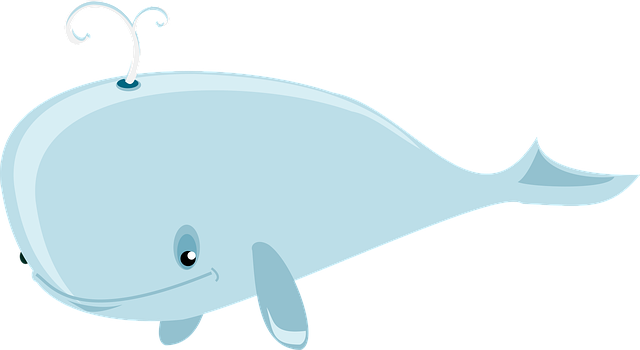
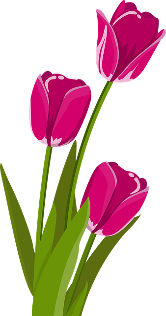

Şarkıyı dinle, her satırın çizimine bak. Uygunsa issue'daki KLİP ONAY kutusunu işaretle; video o zaman üretilir.
⚠️ 'Red, red, a big red apple' satırı için uygun çizim bulunamadı.
⚠️ 'Yellow, yellow, the yellow sun' satırı için uygun çizim bulunamadı.
⚠️ 'Orange, orange, an orange fish' satırı için uygun çizim bulunamadı.
⚠️ 'Purple, purple, a purple star' satırı için uygun çizim bulunamadı.
Çizimler
RED · Red, red, a big red apple · çizim bulunamadı

BLUE · Blue, blue, a big blue whale Gemini 10.0/10 · Çocuklar için çok uygun, sevimli, sade ve net bir mavi balina çizimi. Pixabay'da gör
YELLOW · Yellow, yellow, the yellow sun · çizim bulunamadı
GREEN · Green, green, a little green frog Gemini 10.0/10 · Sevimli, sade ve net bir yeşil kurbağa çizimi; çocuklar için son derece uygun. Pixabay'da gör

PINK · Pink, pink, a pretty pink flower Gemini 8.0/10 · Çocuklar için uygun, sevimli ve net bir pembe lale illüstrasyonu; ancak arka planın siyah olması yerine daha aydınlık olması tercih edilirdi. Pixabay'da gör
ORANGE · Orange, orange, an orange fish · çizim bulunamadı
PURPLE · Purple, purple, a purple star · çizim bulunamadı